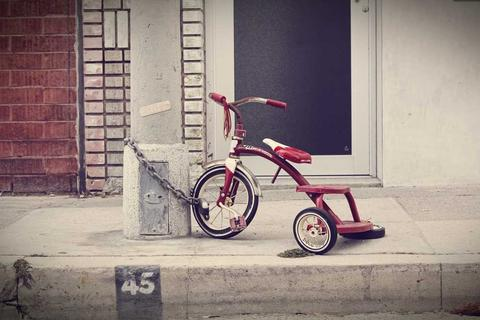

En esta página se incluye una imagen insertada con la etiqueta img, apuntando a un archivo local dentro de la carpeta img del proyecto. La ruta relativa permite que el navegador cargue el recurso al abrir esta página desde el mismo directorio donde está guardado el archivo HTML.
Imagen de práctica:
